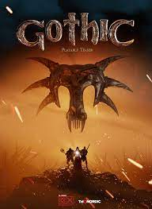
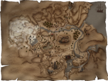

Gothic-jest to gra z pierwszej częsci stworzona przez firmę Jowood, która opowiada o przygodach bezimienego bochatera o imieniu(Bezi). W dalszej części przygód oazuje, że jest wybrańcem boga Belaria.
| GOTHIC | |
|  | |
| Informacje[pokarz] | |
| Nazwa | Gothic |
| Rodzaj | Przygodowa |
| Wydawca | Jowood |
| Wydania |
Niemcy - 15marca 2001
USA - 23 listopada 2001 Polska - 28 Marca 2002 |
| Wymagania | win:98,XP
karta graficzna gtx 220 Direx 5 |
| Nośnik: |
3CD
1DVD |
| Aktualna wersja | 1.08k |
Gothic-jest to gra z pierwszej częsci stworzona przez firmę Jowood, która opowiada o przygodach bezimienego bochatera o imieniu(Bezi). W dalszej części przygód oazuje, że jest wybrańcem boga Belaria.
Spis treści[ukryj]
|
Fabuła opowiada o bochaterze, który trafia do koloni karnej górniczej doliny. Kolonia karna, która znajduje się na wyspie Korinis, którą otacza magiczna barieria po przekroczeniu jej zabija bochatera. Barierie zlecił krół Rychord II a stworzyli ja magiowie Ognia i wody. barieria miała na celu ochrony wydobywaniu rudy, która zasilała miasto Korinis oraz nowy i stary Obóz. W celu produkowania broni dla armii.Przywódcą najemników w Nowym Obozie jest Generał Lee, który wtrącony do kolonii za morderstwo, którego nie popełnił. Przywódcą szkodników jest Lares a arcymistrzem magów wody – Saturas.
Król pokonał wszystkich wogów swego królestwa, którzy zagrażali mu. Dltegowynajął najlepszych żąłnierzy aby mogli przeciw wstawić się armii Orków. Orkowie nigdy nie grzeszyli umysłem ani sprytem. Zanim główny bochater zostanie wrzucony za Barierie dostaje list od Pyrokara żeby dostarczył do Arcymagów w starym obozie. Jeden z trzech obozów występowania w grze.
 Kraina przedstawiona w świecie gry rozgrywa się w średniowieczu. Na początku gry Bezi musi podjąć decyzje do jakiego z trzech obozów musi należeć a są one trzy. Czy można pominąć wątek wyboru obozów? Nie ma takiej opcji aby go pominąc ponieważ wątek fabuły jest oparty na przydzieleniu do tych trzech obozów. Główna fabuła gry jest dynamiczna i cykl jest postępowany. Bezi podczas swojej przygody spotyka bochaterów mu przychilnie mu np.(Diego, Milten, Lester i Diego), którzy służą mu radą oraz pomocą. W krainie można napotkać różne potwory jak i bandytów z którymi trzeba sie wstawić Czoła.
Gracze mogą się przyłączyć do trzech obozów:
Jest to najstarszy obóz w grze, który mieści sie na terenie zamku, niegdyś mieszkałastraż królewska i magowie po stworzeniu bariery więżniowie zostali przyjęci do robut. do pozostłych obozów ten obóz ma surowe kary oraz jest posiadaniu kopalni magicznej rury. Tylko ten obóz prowadzi z królem wymiane towarów chociarz nowy obóz tez ma zasoby swojej kopalni rudy. Po mimo że pozostałe obozy chcą zniszczyć bariery ten nie amierza jej zniszczyć. Ich celem jest handel z królem i obozem Bractwa. Dzięki tym transakcją obóz ten jest najbogatrzy ze wszystkich trzech obozów. Dzięki temu król Robhal II daje im wszystko co sobie zarząda Obóz. Przywódcą obozu jest stary magnat o imieniu Gomez, który stacjonuje w zamku gdzie na obrzeżach miasta znajduje sie arena otoczona pierścieniem gdzie wszystkie trzy obozy walcza ze sobą. Przywódcą strażników jest Thorus, Cienie-Diego a magów ognia Corristo.
Nowy obóz powstał z rozłamu starego obozu. Dąży do zniczenia bariery, która została stworzona przez magów ognia. Ich celem jest wysadzenie bariery za omoca słóż rudy i uwolnienia więźniów w tym celu wykopują wię krety z wolnej kopalni. Swoje składowisko znajduje się w wielkiej górze gdzie są przetrzymywane. W nowym obozie znajdują się przeważnie dezerterzy ze starego obozu, którzy postanowili dażyć do wyzwolenia. W tym obozie nie ma zasad niestety muszą wstawić swoim wyzwaniąm. By jednak chronć rude stworzono spichlerz zapasów gdzie są chronione przez wał usypany przed zębaczami. Dzięki dużej ilości rudy nowy obóz żyje z napadów na komwój zwłasza obozu starego. Ten konflikt może doprowadzic do wojny domowej w Górniczej Dolinie. Posiadanej tamie wodnej jest możliwe uprawianie pól gdzie jest uprawiany ryż, który jest wykorzystywany do produkcji ryżówki napoju alk. Nowym Obozie przywódcą jest Generał Lee, wtrącony do kolonii za morderstwo, którego nie popełnił. Przywódcą szkodników jest Lares, a arcymistrzem magów wody – Saturas.
Ich wygląd jest ponury i mają ogolone głowy co sugeruje ich zwyczaj i upodobanie do śnącego. Wyglądu Obóz wygląda jak otoczone miasteczko z domkami drewnianyi przykrytymi płachtą. Jedna z nich stojący dom, który jest zawieszony nad ziemią pełni role świątyni. Ludzie należący do bractwa odaja chci do bóstwa o im. Sniący każdy wierny z tego obozu dostaje dzienną dawkę bagienego ziela w celu prozumienia się ze Śniącym. Ich celem jest atakowanie bariery w celu wydostania się na dalsze akątki świata i szrzeniu swojej ideologii. Przez pozostałych więżniów z Górniczej doliny są uważani za świrów lub wariatów. Spowodowane jest tym po przez tatuże czy noszone stroje przypominające szaty z worków na ziemniaki oraz z ogolonych głów. Każdy z wieźniów chcę należeć do tego bractwa z powodu bagiennego ziela, które działa wizyjnie. W Świątyni mieszkają Y-ber oraz Natalia, którzy pełnią role z kapłana i kapłanki. Celem nowicjuszy jest pielegniowaniem duszy oraz zbieraniem i obróbką bagiennego ziela natomiast guru ma za zadanie odbieranie wizji od boga i nauczaniu jego religią. strażników obozów, którzy pilnują porządków w obozie zbierają wydzielinę pełzaczy – potworów podobnych do wielkich pająków nękających kopaczy w Starej Kopalni.
W grze Gothic można znaleść wiele artefaktów:
Technika gry jest opracowana w trybie trójwymarowym w trzeciej osobie co pozwala. Gra pozwala postaci rozmawiać po przez kliknięciu lewym przyciskiem luc klawiszem CTRL. Dzięki polowaniom oraz wykonywanym zadaniom otrzymujemy punkty doświadczenia, które możemy wykorzystać tylko u nauczeli w celu zwiększenia siłu lub zręczności. CD Projekt zapoczątkował tylko rozmowy w języku Polskim.
Postać bochatera może być rozwijana poprzez zdobywania nauki punkty za zdobyte punkty wynoszące 10pkt lub więcej zależności od bestii zabitej lub wykonanego zadania może wykorzystać punkty w dowolnym czasie gry. Natomiast nauki magii można nauczyc sie tylko u magów Bezi może wbogacić się w nowe zaklęcia. Twórcy gry postanowili w grze dać bardzo prostą tabele w wstatystykach(Siła, zręczność, many oraz zdrowia). Doświadczenia, które można uzyskac to posługiwanie sie bronią jedno lub dwuręczną, otwieranie zamków wytrychem skradanie się czy akrybatyka.
W grudniu 2019 wyda THQ Nordic zapowiedziało stworzenie kultowej gry Gothic Remake całkowicie odnowiona i odświeżona wersja przygów w Górniczej Dolinie.